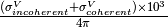

DgsAbsoluteUnitsReduction dialog.
Table of Contents
| Name | Direction | Type | Default | Description |
|---|---|---|---|---|
| InputWorkspace | Input | MatrixWorkspace | Mandatory | The absolute units sample workspace. |
| InputMonitorWorkspace | Input | MatrixWorkspace | A monitor workspace associated with the absolute units sample workspace | |
| DetectorVanadiumWorkspace | Input | MatrixWorkspace | An absolute units detector vanadium workspace. | |
| DetectorVanadiumMonitorWorkspace | Input | MatrixWorkspace | A monitor workspace associated with the absolute units detector vanadium workspace. | |
| MaskWorkspace | Input | MatrixWorkspace | A masking workspace to apply to the data. | |
| GroupingWorkspace | Input | MatrixWorkspace | A grouping workspace for the absolute units data. | |
| ReductionProperties | Input | string | __dgs_reduction_properties | |
| OutputWorkspace | Output | MatrixWorkspace | Mandatory | The integrated absolute units workspace. |
| OutputMaskWorkspace | Output | MatrixWorkspace | Mandatory | The diagnostic mask from the absolute units workspace |
This algorithm is responsible for taking an absolute units sample and converting it to an integrated value (one value for entire workspace) for that sample. A corresponding detector vanadium can be used in conjunction with the data reduction. The diagram below shows the workflow. The AbsUnitsIncidentEnergy parameter needs to be passed via a property manager since the absolute units sample may have been measured at an energy different from the sample of interest. Parameters in italics are controlled by the instrument parameter file (IPF) unless provided to the algorithm via a property manager. The mappings are given below.
| Parameter | IPF Mapping |
|---|---|
| VanadiumMass | vanadium-mass |
| AbsUnitsMinimumEnergy | monovan-integr-min |
| AbsUnitsMaximumEnergy | monovan-integr-max |
The last two parameters are used to create a single bin for the Rebin algorithm. The dashed oval parameter, VanadiumRmm, is taken from the atomic information for the molecular mass of Vanadium. The open circle represents detector diagnostic parameters and they are detailed in the table below.
| Parameter | IPF Mapping | DetectorDiagnostic Mapping |
|---|---|---|
| HighCounts | diag_huge | HighThreshold |
| LowCounts | diag_tiny | LowThreshold |
| AbsUnitsLowOutlier | monovan_lo_bound | LowOutlier |
| AbsUnitsHighOutlier | monovan_hi_bound | HighOutlier |
| AbsUnitsMedianTestLow | monovan_lo_frac | LowThresholdFraction |
| AbsUnitsMedianTestHigh | monovan_hi_frac | HighThresholdFraction |
| AbsUnitsErrorBarCriterion | diag_samp_sig | SignificanceTest |
If a detector vanadium is used, the processed sample workspace is
multiplied by a factor containing the sample mass (SampleMass), sample
molecular mass (SampleRmm) and the cross-section (Scattering XSec) given
by:

with the cross-section units of  .
.
Warning
This algorithm is not really intented for use at the command line, but is used within DgsReduction.
Categories: Algorithms | Workflow\Inelastic\UsesPropertyManager